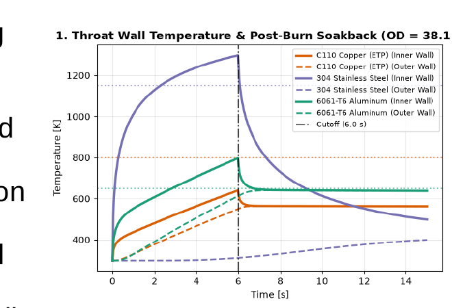
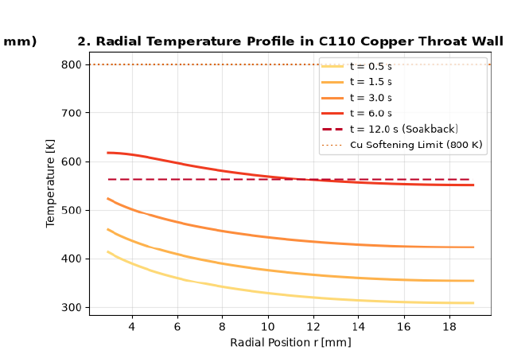

WISP (Wisconsin Space Program)
Propulsion & Thermal
Data Analysis & Engineering Research
WISP Torch Ignitor — Engineering Analysis & Data Presentation
A collaborative propulsion engineering project evaluating a GOX/C3H8 rocket torch igniter. Analyzes 1D transient heat-sink thermal survivability using the Bartz equation and Newton's law of cooling, orifice sizing across compressible and incompressible regimes, chamber contraction ratio scaling, and shifting-equilibrium supersonic exhaust dynamics.
Propellants
GOX / C3H8 (O/F 1.50)
Chamber Geometry
dt = 5.89 mm · Ac/At = 6.50
Thermal Architecture
C110 Copper Heat Sink
Safe Burn Duration
> 6.0 s (< 800 K Limit)
- Bartz Equation
- 1D Transient Conduction
- NASA CEA / CEARUN
- Injector Orifice Sizing
- Spreadsheet Audit